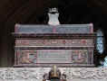
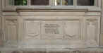

|
| Knud den Store i Winchester, England | English |
Klik p� billeder for at forst�rre 
Her i Winchester ligger Knud den Store, den st�rste viking og det danske Nords�imperiums skaber.
Kisten hviler h�jt oppe p� en tv�rmur i katedralen.
Hvem var han?
Knud den Store (King Canute i England), konge af Danmark, Norge, England, tildels Sverige og Skotland. Han generobrede England i 1016 efter hans far Svend Tvesk�gs d�d og skabte sit v�ldige s�-imperium som f�lge af vikingernes magt p� de nordlige have. Han indtog sin plads som en af kristenhedens m�gtigste fyrster, da han vandrede side om side med den tysk-romerske kejser op gennem Peterskirken ved dennes kroning i Rom.
I England regnes Knud for det angelsachsiske Englands st�rste konge. Efter at have vundet kongemagten ved sv�rdet styrede han landet gennem angelsachsiske fyrster, blev kirkens velg�rer, lagde Danmark under den engelske kirke og fremmede kristenheden i Norden. Han giftede sige med den forrige Kong Ethelreds popul�re enke Emma.
Ligkisterne
Der er seks kister i katedralen, tre i hver side af omr�det foran alteret, der indholder resterne af fortrinsvis angelsachsiske konger og biskopper - se listen i andet billede foroven. Kisten med Knud og Emma har indskrifter p� begge sider p� latin (sidste to fotos). If�lge f�rste indskrift indholder kisten ogs� levningerne af den senere normanniske konge Wilhelm Rufus (s�n af Wilhelm Erobreren) og to angelsachsiske biskopper.
Vistnok. Under den engelske borgerkrig i 1640erne mellem Cromwell og Kong Charles I, blev kisterne ransaget af puritanerne og knoglerne spredt. I 1661 blev de samlet sammen igen og ordnet s� godt som muligt, som der st�r p� indskriften i sidste foto. Men der var �benbart stadig lidt usikkerhed - s� de samme indskrifter findes p� kisten overfor!
Kisterne og tv�rmurene, hvorp� de st�r, er fra 1525. Levningerne blev dog samlet fra de enkelte grave l�nge f�r.
| Hardeknud, Knuds s�n, er ogs� begravet i katedralen |  |
Links:
Andre danske emner p�
Astoft - herreg�rde, kirker, H.C. Andersen, Carl Nielsen
All photographic images on this website are copyright the website owner 2001 or later unless otherwise stated. Email contact above. Full resolution originals are available for approved purposes. |